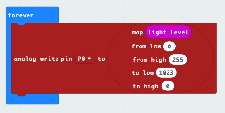

micro:bit
The micro:bit is a tiny programmable computer, designed to make learning and teaching easy and fun.

Maintenance issue
Issue: the micro:bit usb drive is called "MAINTENANCE". Solution: update it with new firmware
Out of the box program
Here is the out of the box program.
External LED
Connecting external LED's

Turn two LED's on and off with A and B button:

Make the LED dim by using the internal light sensor:
Light level/sensor
The micro:bit can use it's internal LED's to meassure light level.
Make the external LED dim by using the internal light sensor:
Edge connector
To make use of all the pins on the micro:bit you will need an edge connector. Like this one from Adafruit.